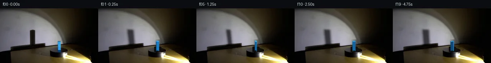

![首帧]()

Round 00
2026-11-05T00:23:20.748150+00:00像素候选变化代码 +248/−0inspection 更新
pixels 8092be730cc29958 · code 3acd5e8c17bd70d8
查看本轮 generate.py 真实 diff
--- previous/generate.py
+++ current/generate.py
@@ -0,0 +1,248 @@
+from pathlib import Path
+import math
+
+import cv2
+import numpy as np
+from PIL import Image, ImageDraw, ImageFilter, ImageFont
+
+from artifact_io import save
+
+
+ROOT = Path(__file__).resolve().parent
+W, H = 256, 144
+S = 4
+
+
+def row_restore(image, x0, x1, y0, y1):
+ """Remove a vertical foreground item while retaining the row-wise wall gradient."""
+ out = image.copy()
+ for y in range(y0, y1):
+ left = image[y, max(0, x0 - 4):x0].astype(np.float32).mean(axis=0)
+ right = image[y, x1:min(W, x1 + 4)].astype(np.float32).mean(axis=0)
+ n = x1 - x0
+ for j, x in enumerate(range(x0, x1)):
+ f = (j + 1) / (n + 1)
+ value = left * (1.0 - f) + right * f
+ # Preserve a trace of the sensor/wood texture without carrying the object.
+ donor = image[y, x0 - 3 + (j % 3)].astype(np.float32)
+ value += (donor - left) * 0.16
+ out[y, x] = np.clip(value, 0, 255)
+ return out
+
+
+def aa_mask(polygons=None, ellipses=None, blur=0.0):
+ mask = Image.new("L", (W * S, H * S), 0)
+ d = ImageDraw.Draw(mask)
+ for poly, value in polygons or []:
+ d.polygon([(round(x * S), round(y * S)) for x, y in poly], fill=value)
+ for box, value in ellipses or []:
+ d.ellipse(tuple(round(v * S) for v in box), fill=value)
+ if blur:
+ mask = mask.filter(ImageFilter.GaussianBlur(blur * S))
+ return np.asarray(mask.resize((W, H), Image.Resampling.LANCZOS), dtype=np.uint8)
+
+
+def composite_solid(frame, color, mask):
+ a = mask.astype(np.float32)[..., None] / 255.0
+ c = np.asarray(color, dtype=np.float32)[None, None, :]
+ return np.clip(frame.astype(np.float32) * (1.0 - a) + c * a, 0, 255).astype(np.uint8)
+
+
+def make_clean_plate(source):
+ # Restore the upper wall across the original enlarged block shadow.
+ clean = row_restore(source, 72, 99, 50, 95)
+
+ # Remove the blue block. Above the table a row interpolation follows the dark
+ # wall; over the turntable a small Telea fill reconstructs the black surface.
+ clean = row_restore(clean, 147, 164, 82, 101)
+ mask = np.zeros((H, W), np.uint8)
+ cv2.rectangle(mask, (148, 99), (163, 116), 255, -1)
+ filled = cv2.inpaint(cv2.cvtColor(clean, cv2.COLOR_RGB2BGR), mask, 3,
+ cv2.INPAINT_TELEA)
+ clean = cv2.cvtColor(filled, cv2.COLOR_BGR2RGB)
+
+ # Put back a stable, softly modeled center of the black platter. The original
+ # fixed warm rim highlight outside this small patch remains untouched.
+ yy, xx = np.mgrid[0:H, 0:W]
+ e = ((xx - 154.0) / 22.8) ** 2 + ((yy - 107.5) / 8.2) ** 2
+ core = (e < 0.78) & (xx >= 146) & (xx <= 164)
+ shade = 13.0 + 4.0 * (xx - 146) / 18.0 + 1.5 * (yy - 101) / 14.0
+ for c, tint in enumerate((0.93, 0.88, 0.91)):
+ clean[..., c][core] = np.clip(shade[core] * tint, 0, 255)
+ return clean
+
+
+def project_plan(x, y, z=0.0):
+ # Orthographic tabletop camera: depth moves a point slightly upward.
+ return 154.8 + x, 112.2 - z - 0.43 * y
+
+
+def rotated_corners(theta):
+ a, b = 3.75, 2.15
+ base = [(-a, -b), (a, -b), (a, b), (-a, b)]
+ c, s = math.cos(theta), math.sin(theta)
+ return [(c * x - s * y, s * x + c * y) for x, y in base]
+
+
+def render_wall_shadow(frame, theta):
… diff truncated; 161 more lines …